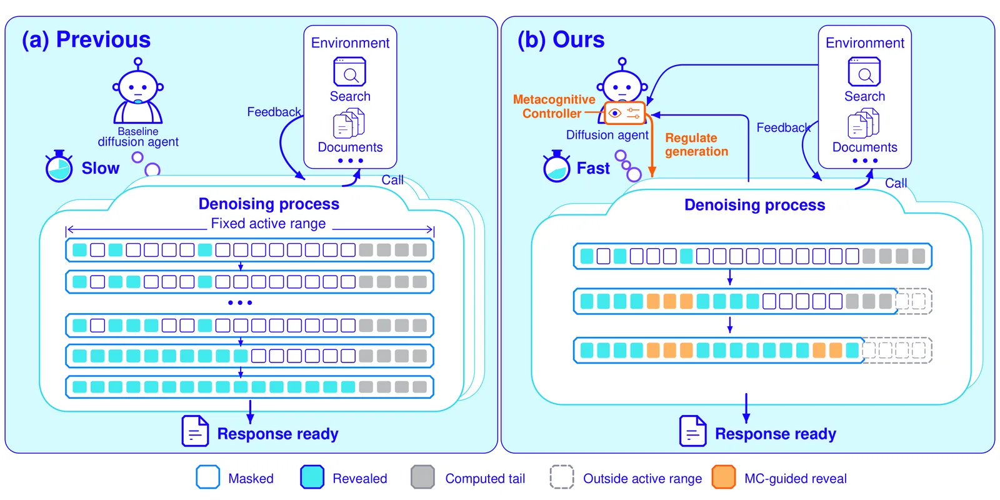
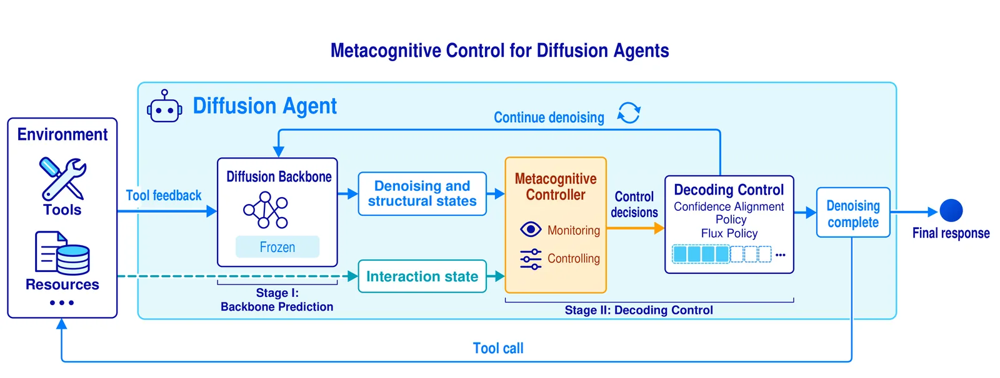
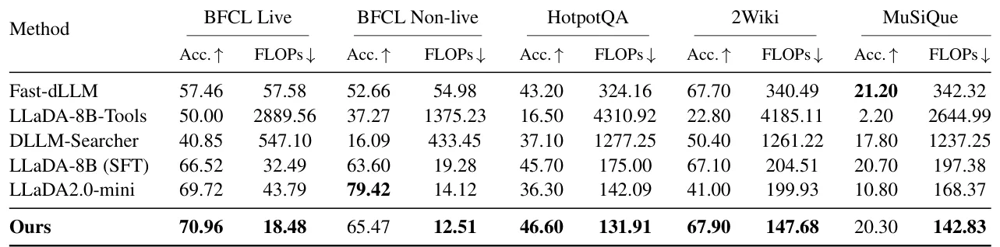

O Problema da Ineficiência em Agentes Difusivos
Modelos de linguagem baseados em difusão (Diffusion Language Models) surgem como uma alternativa promissora para a geração de texto, principalmente pela capacidade de gerar múltiplos tokens em paralelo. No entanto, quando esses modelos são utilizados como agentes de IA — sistemas que interagem com ambientes externos, chamam ferramentas e processam feedback — a eficiência do processo de inferência se torna um gargalo crítico. A literatura recente identifica que a principal ineficiência não reside apenas no modelo em si, mas na desconexão entre o mecanismo de decodificação rígido e a natureza dinâmica das trajetórias de agentes.
Em um cenário de agente, cada resposta não é um bloco isolado, mas parte de um ciclo contínuo de raciocínio, execução de ferramentas e observação de resultados. Os modelos tradicionais de difusão processam tokens em blocos de tamanho fixo, o que leva a duas formas severas de redundância computacional. Primeiro, eles tratam todos os tokens uniformemente, desperdiçando poder de processamento em estruturas altamente previsíveis (como templates de API) ou arriscando erros ao finalizar tokens complexos cedo demais. Segundo, eles frequentemente computam tokens desnecessários após o limite de execução de uma ferramenta, gerando dados que serão descartados pelo ambiente.
Para resolver essa desconexão, os autores propõem o Metacognitive Decoding, uma abordagem que introduz um controlador metacognitivo leve. Este controlador atua como uma camada de plug-in sobre o backbone de difusão, monitorando tanto o estado interno do modelo quanto o estado externo da interação. O objetivo é claro: adaptar onde e quanto texto é gerado com base nas necessidades reais da resposta atual, reduzindo o custo computacional total sem comprometer a precisão da tarefa.

A Arquitetura do Controlador Metacognitivo
O cerne da proposta é um controlador que não treina o modelo de difusão principal, mantendo-o congelado, mas sim treina uma pequena rede adicional para gerenciar o processo de decodificação. Este controlador opera em dois estágios principais: monitoramento e controle. No estágio de monitoramento, ele coleta sinais internos, como o estado de desnhoising (denoising) e a incerteza da previsão, e sinais estruturais, que capturam padrões recorrentes em chamadas de ferramentas ou raciocínios. Simultaneamente, ele observa o estado de interação externo, verificando se segmentos de pensamento, chamadas de ferramenta ou respostas finais foram completados.
Esses sinais são organizados em entradas de posição, candidatos estruturais e globais, que são codificados para gerar representações que guiam o controle. A inovação aqui não está em criar um novo modelo de linguagem, mas em criar uma política de decisão que sabe 'quando parar' e 'o que aceitar'. O controlador utiliza uma política de decodificação em cascata, composta por duas camadas distintas que trabalham em conjunto para otimizar a eficiência.
A primeira camada é a política de Flux Decoding. Ela determina quais posições no bloco de tokens devem permanecer ativas para computação e quais podem ser excluídas temporariamente. Em vez de processar todo o bloco de tamanho fixo, o controlador encolhe dinamicamente a janela de geração ativa, ignorando posições downstream desnecessárias. Se a resposta atual requer mais espaço, a janela se expande; caso contrário, ela se contrai, economizando operações de ponto flutuante (FLOPs) significativas.
Alinhamento de Confiança e Decodificação em Cascata
A segunda camada é a política de Confidence Alignment Decoding. Enquanto o Flux Decoding gerencia o alcance espacial da computação, esta política gerencia a aceitação temporal dos tokens. Ela identifica estruturas altamente previsíveis, como formatos padrão de chamadas de ferramenta, e as finaliza simultaneamente. Para tokens individuais, o controlador ajusta dinamicamente os limiares de aceitação baseados na confiança da previsão do backbone.
Esse mecanismo de cascata garante que a computação seja gasta apenas onde é estritamente necessária. Por exemplo, ao gerar uma chamada de ferramenta, o controlador reconhece o padrão estrutural e acelera a finalização dos tokens conhecidos, enquanto foca a computação residual nos tokens de raciocínio ou argumentos específicos. Isso permite que a geração pare eficientemente no exato momento em que uma chamada de ferramenta é acionada, evitando o desperdício de computar tokens finais que o ambiente ignorará.
O treinamento do controlador é realizado sobre trajetórias de agentes, equilibrando a correção da tarefa e o custo de geração. Os autores utilizam um codificador Transformer de duas camadas para o controlador, treinado em paralelo com o backbone congelado. Essa separação é crucial: ela permite que a técnica seja aplicada a diferentes backbones de difusão sem a necessidade de retreinamento custoso do modelo principal, facilitando a adoção da abordagem em sistemas existentes.

Avaliação Experimental e Resultados
Os autores avaliaram a eficácia do Metacognitive Decoding em cinco benchmarks, cobrindo tarefas de chamada de ferramentas (BFCL v3) e raciocínio multi-hop (HotpotQA, 2WikiMultiHopQA, MuSiQue). A métrica de precisão para as tarefas de raciocínio foi o Exact Match Coberto (CEM), que verifica se a resposta correta está incluída na saída prevista. Para o custo computacional, utilizaram FLOPs acumulados ao longo de toda a trajetória de interação, incluindo a computação do próprio controlador.
Os resultados demonstram uma redução média de 20,6% nos FLOPs de inferência em comparação com a baseline mais eficiente, mantendo uma precisão competitiva. Na tabela de resultados, o método proposto superou o LLaDA2.0-mini em precisão na tarefa BFCL Live (70,96% vs 69,72%) com um custo drasticamente menor (18,48 vs 43,79 FLOPs). Em tarefas de raciocínio como HotpotQA, o método alcançou 46,60% de precisão com 131,91 FLOPs, contra 36,30% e 142,09 FLOPs do baseline.
É importante notar que as baselines incluem modelos adaptados à tarefa, como o LLaDA-8B-Tools, que foi ajustado especificamente para chamadas de ferramentas. Mesmo contra esses modelos otimizados, o controlador metacognitivo mostrou-se eficaz. A comparação com o LLaDA-8B (SFT), que é o backbone sem o controlador, isolou a contribuição específica da metacognição, mostrando que a redução de custo vem diretamente da política de decodificação, não de alterações no modelo base.

Análise Crítica e Limitações
Embora os resultados sejam promissores, a abordagem tem limitações inerentes à sua dependência de sinais de confiança e padrões estruturais. O controlador funciona melhor em cenários onde existem padrões previsíveis, como templates de API. Em tarefas de geração de texto livre, onde a estrutura é menos rígida, a capacidade de identificar 'candidatos estruturais' pode ser menos eficaz. Além disso, a eficácia do Flux Decoding depende da qualidade da previsão do backbone; se a incerteza do modelo for alta em regiões críticas, o controlador pode não conseguir encolher a janela de geração com segurança.
Outra consideração é o overhead do próprio controlador. Embora descrito como 'leve', ele adiciona uma camada de computação adicional a cada passo de decodificação. Os autores incluem este custo nos FLOPs totais, e mesmo assim obtêm ganhos líquidos, o que indica que a economia gerada pela exclusão de computação desnecessária supera o custo do controlador. No entanto, em cenários de latência extremamente crítica, o overhead de decisão do controlador poderia se tornar um fator a ser considerado, dependendo da implementação de hardware.
Os autores também apontam que a adaptação do controlador a modelos de difusão em evolução é uma direção futura importante. Como a técnica depende de sinais específicos de desnhoising e estrutura de bloco, mudanças significativas na arquitetura do backbone podem exigir retreinamento ou ajuste fino do controlador. Isso limita a portabilidade universal da solução no curto prazo, exigindo que ela seja vista como uma estratégia complementar ao desenvolvimento de backbones, e não como um substituto para avanços algorítmicos fundamentais.
Conclusão: Eficiência através da Consciência Contextual
O Metacognitive Decoding apresenta uma mudança de paradigma na forma como pensamos a inferência em agentes de linguagem. Em vez de tratar a geração de texto como um processo estático de preenchimento de blocos, a abordagem propõe uma interação dinâmica onde a computação é alocada conscientemente. Ao alinhar o processo de geração com os estados de interação do agente, os autores demonstram que é possível reduzir significativamente o desperdício computacional.
Para desenvolvedores e cientistas de dados que trabalham com agentes de IA, a lição principal é que a eficiência não vem apenas de modelos mais rápidos, mas de sistemas que sabem quando não processar. O controlador metacognitivo serve como um exemplo prático de como camadas leves de inteligência podem otimizar o ciclo de vida da inferência, tornando os agentes de difusão viáveis para aplicações de larga escala onde o custo de computação é uma barreira crítica.
Takeaways Práticos
1. A eficiência em agentes de difusão exige decodificação adaptativa, não apenas modelos mais rápidos. Ignorar o estado de interação leva a redundância computacional severa.
2. O controlador metacognitivo é uma camada leve que pode ser adicionada a backbones existentes, reduzindo FLOPs em ~20% sem retreinamento do modelo base.
3. A técnica combina dois mecanismos: Flux Decoding para ajustar o alcance da computação e Confidence Alignment para acelerar tokens previsíveis.
4. A abordagem é mais eficaz em tarefas com estruturas previsíveis (como chamadas de ferramenta) e requer adaptação para novos tipos de backbones de difusão.
O que fica
- A eficiência em agentes de difusão exige decodificação adaptativa, não apenas modelos mais rápidos. Ignorar o estado de interação leva a redundância computacional severa.
- O controlador metacognitivo é uma camada leve que pode ser adicionada a backbones existentes, reduzindo FLOPs em ~20% sem retreinamento do modelo base.
- A técnica combina dois mecanismos: Flux Decoding para ajustar o alcance da computação e Confidence Alignment para acelerar tokens previsíveis.
- A abordagem é mais eficaz em tarefas com estruturas previsíveis (como chamadas de ferramenta) e requer adaptação para novos tipos de backbones de difusão.
Paper original: Metacognitive Decoding: Efficient Inference for Diffusion Language Agents
Comentários
Nenhum comentário ainda. Seja o primeiro.